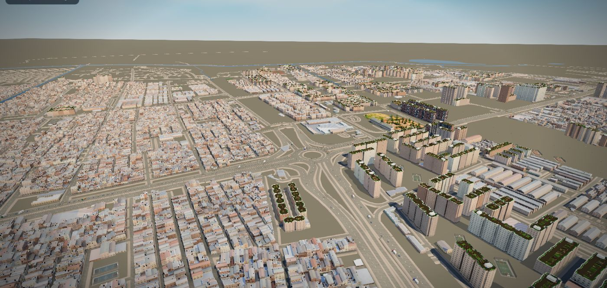
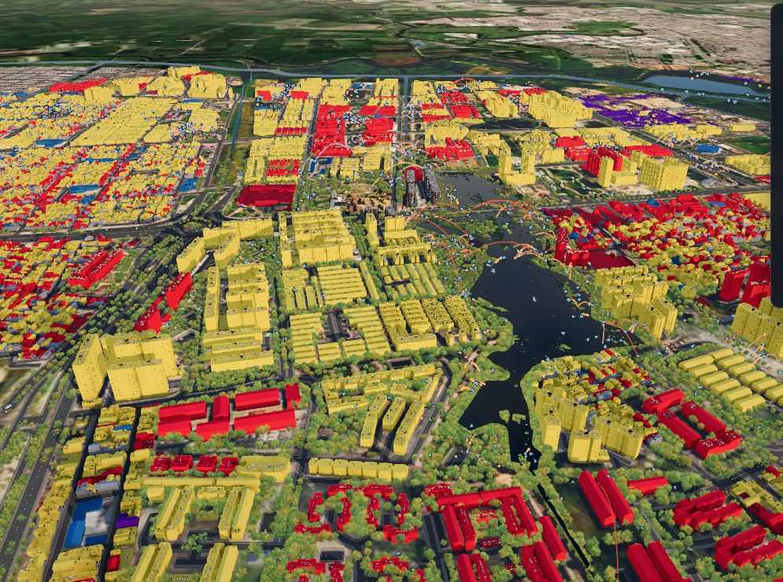
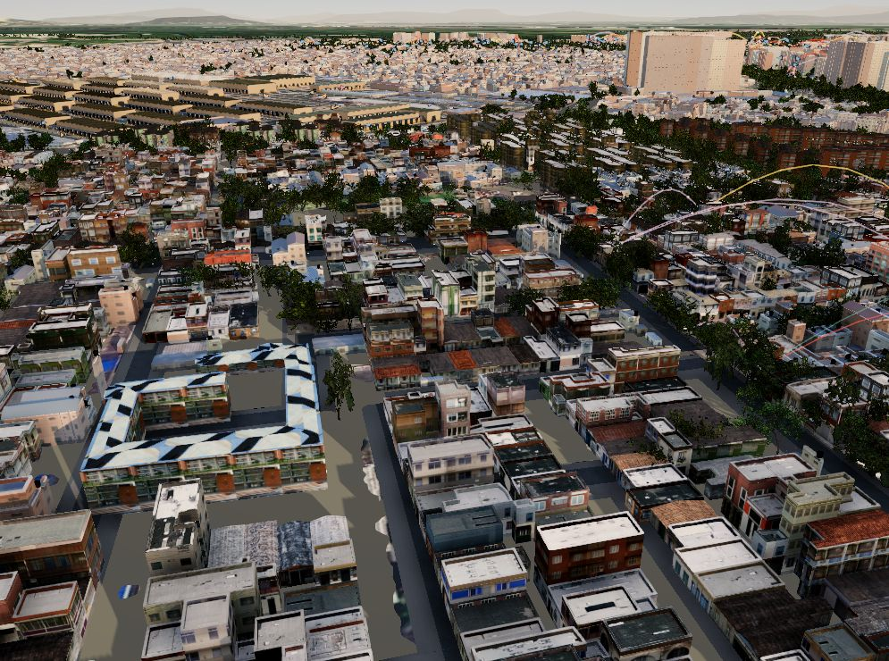
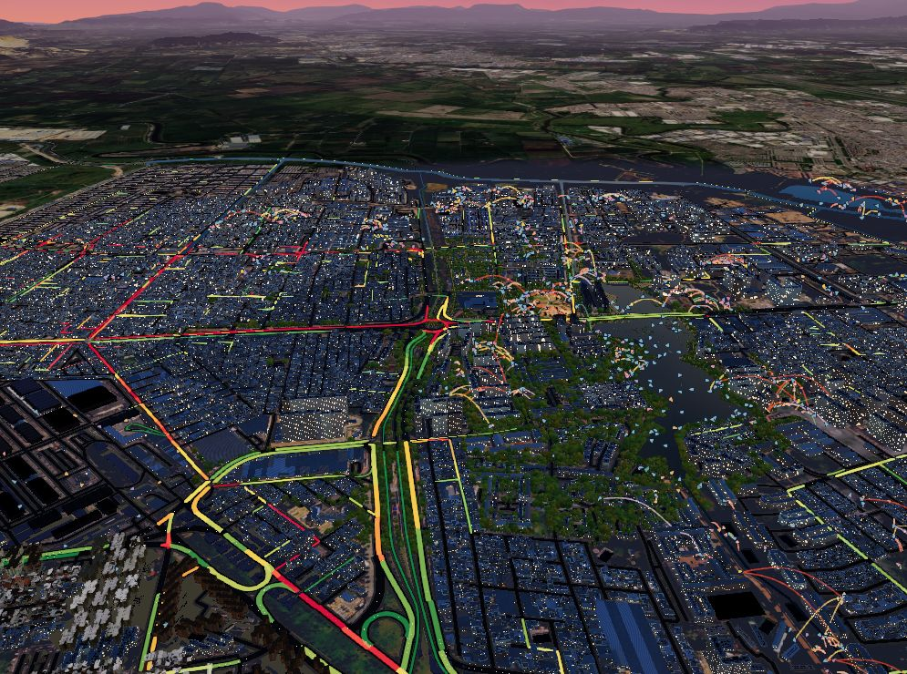
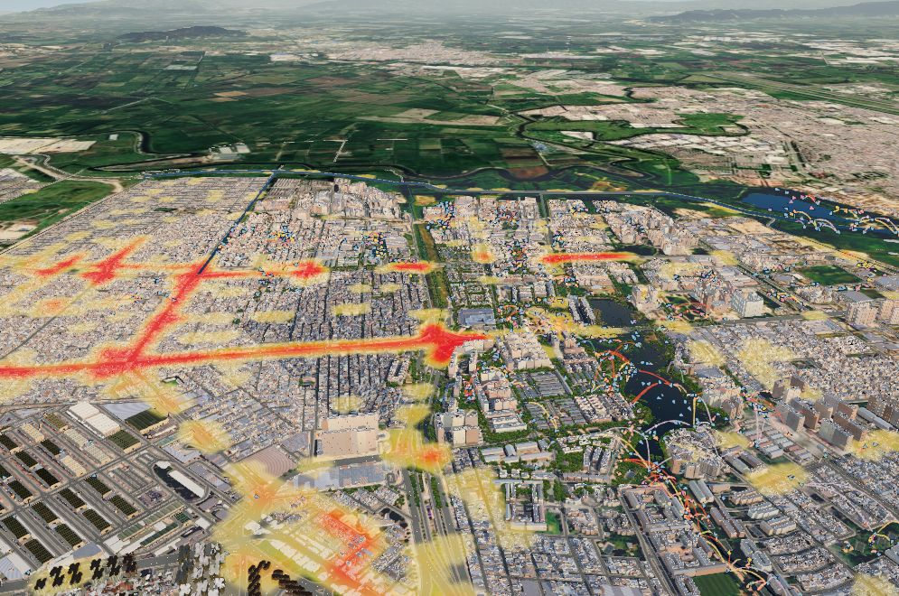
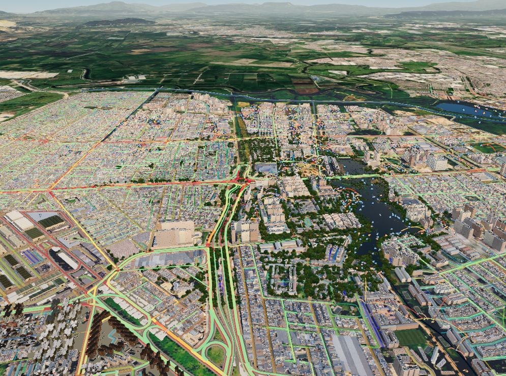
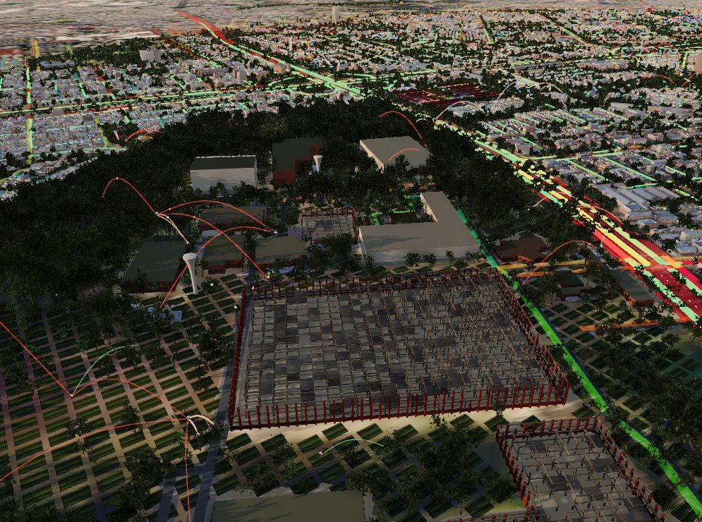
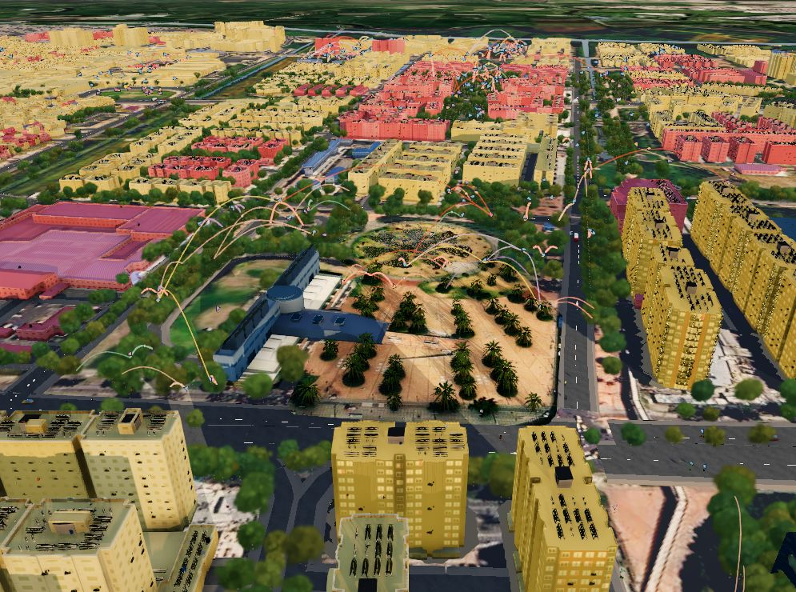

Simulación territorial de una red de alimento, conocimiento y ecosistemas que reparte lo que hoy se concentra en un solo punto.
En Kennedy el abastecimiento se concentra en Corabastos, el bosque de Bavaria está en disputa y los humedales quedan encerrados entre bordes construidos. Cada problema refuerza a los demás: por eso se lee como un sistema de relaciones.
El simulador reúne en una sola escena los edificios, la red vial, el arbolado, los humedales y los usos del suelo, con datos abiertos y oficiales. Estas son las piezas con las que trabaja.

El uso de cada edificio sale del lote que lo contiene (shapefile Usos_kennedy, 50.878 lotes). Pasa el cursor por la dona.
Cómo se calculó: unión espacial por el centroide de cada edificio. Un tercio de los edificios cae en lotes sin uso asignado; en el simulador se muestran como residenciales.

En el sector del INEM, el modelo oficial de Bogotá (escena de CityEngine de IDECA y la Secretaría de Planeación) reemplaza a los volúmenes genéricos: cada lote trae su foto de fachada.
En el resto de la localidad los edificios son extrusiones de OpenStreetMap con su altura, tono y cubierta.
El tráfico es una simulación SUMO de miles de vehículos sobre las vías reales. A cada hora sale a la calle una parte distinta de ellos, y la capa de flujo pinta cada vía según cuántos carros la usan en ese momento.
Supuesto SUP: perfil típico de tráfico de Bogotá (picos de 6 a 8 y de 17 a 19). No es un conteo medido en Kennedy: con aforos de la Secretaría de Movilidad se reemplaza.

Cada carro suma al tramo de vía más cercano; el color muestra los carros por kilómetro y por carril de los últimos segundos. Al mover el reloj, las avenidas pasan de rojo en la hora pico a casi vacías en la madrugada.

Cada vehículo aporta una mancha de 55 m que se suma con las vecinas: donde se juntan muchos carros, más ruido.
Al cerrar una de las seis vías críticas, los vehículos que la usaban toman la ruta más corta por las calles vecinas, y el flujo y el ruido se redistribuyen.
Ilustrativo: se desvían los mismos vehículos grabados; no se vuelve a simular SUMO.
Con el método angular de depthmapX, cada vía se divide en tramos y se calcula su integración (qué tan cerca, en giros, queda de todos los demás) y su elección (cuántos de los recorridos más directos pasan por él).
La sintaxis muestra el potencial de la red; la simulación SUMO muestra su uso. Leerlas juntas indica dónde conviene poner tiendas, huertas y plazas.

Bavaria Común se vuelve un hub de conocimiento que enseña y produce bioinsumos, sin acopiar alimentos. La producción se reparte en cubiertas, balcones, lotes y viviendas, y llega a las tiendas de barrio.

En los claros del predio el modelo ubica 1.317 parcelas de huerta en hileras; las naves se vuelven laboratorio de compostaje, hongos e inoculantes que salen hacia los barrios.
El Colectivo Salvemos el Bosque Bavaria articula: convoca asambleas y custodia la memoria de la lucha por las 48,76 ha del bosque.

Colibríes, abejas, mariposas, abejorros y copetones visitan las huertas de las cubiertas y tejen una red entre edificios.
Cantidades de diseño SUP: individuos simulados para mostrar la red, no un censo.
Las asambleas de cada barrio deciden con voz y voto en igualdad y se coordinan entre sí por delegados rotativos. El conocimiento está en el centro, pero no decide: enseña a los líderes, que lo llevan a sus vecinos.